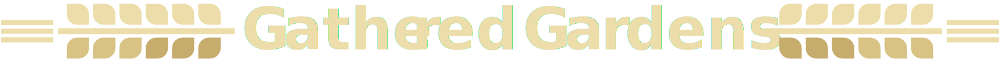

<nav class="navbar navbar-default" role="navigation">
	<div class="navbar-header">
		<button type="button" class="navbar-toggle" ng-click="$ctrl.isNavCollapsed = !$ctrl.isNavCollapsed">
			<span class="sr-only">Toggle navigation</span>
			<span class="icon-bar"></span>
			<span class="icon-bar"></span>
			<span class="icon-bar"></span>
		</button>
		<a class="navbar-brand" ui-sref="home"></a>
	</div>
	<div class="collapse navbar-collapse" uib-collapse="$ctrl.isNavCollapsed">
		<ul class="nav navbar-nav navbar-right">
      <li><a ui-sref="about" class="nav-button" ui-sref-active="button-primary">About</a></li>
      <li><a ui-sref="land" class="nav-button" ui-sref-active="button-primary" ng-if="$ctrl.isLoggedIn">Gardens</a></li>
      <li><a ui-sref="produce" class="nav-button" ui-sref-active="button-primary">Produce</a></li>

			<li><a ui-sref="digest" class="nav-button" ui-sref-active="button-primary" ng-if="$ctrl.isLoggedIn">News</a></li>


			<li><a ui-sref="forum" class="nav-button" ui-sref-active="button-primary" ng-if="$ctrl.isLoggedIn">Forum</a></li>

			<li><a ui-sref="login" class="nav-button" ui-sref-active="button-primary" ng-if="!($ctrl.isLoggedIn)">Login</a></li>

			<li ><a ui-sref="home" class="nav-button" ui-sref-active="button-primary" ng-if="$ctrl.isLoggedIn" ng-click="$ctrl.logOut()">Logout</a></li>

		</ul>
	</div>
</nav>

<div class="container">
  <ui-view></ui-view>
</div>


<footer>
	<div class="navbar-fixed-bottom navbar background-color-green-dark text-center" role="navigation">
		<div class="container">
			<h5 class="color-green-light"><a href="http://www.growinggardens.org/" class="navbar-link" ui-sref-active="button-primary color-green-light">Visit Growing Garden's Home Page</a></h5>
		</div>
	</div>
</footer>
